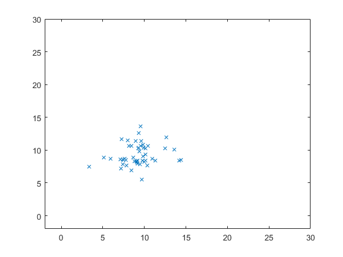
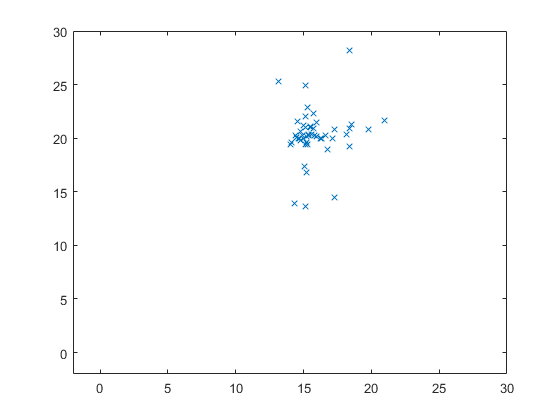

Contents
clear;
clc;
iterations = 30;
inertia = 1.0;
correction_factor = 2.0;
swarm_size = 49;
index = 1;
for i = 1 : 7
for j = 1 : 7
swarm(index, 1, 1) = i;
swarm(index, 1, 2) = j;
index = index + 1;
end
end
swarm(:, 4, 1) = 1000;
swarm(:, 2, :) = 0;
for iter = 1 : iterations
for i = 1 : swarm_size
swarm(i, 1, 1) = swarm(i, 1, 1) + swarm(i, 2, 1)/1.3;
swarm(i, 1, 2) = swarm(i, 1, 2) + swarm(i, 2, 2)/1.3;
x = swarm(i, 1, 1);
y = swarm(i, 1, 2);
val = (x - 15)^2 + (y - 20)^2;
if val < swarm(i, 4, 1)
swarm(i, 3, 1) = swarm(i, 1, 1);
swarm(i, 3, 2) = swarm(i, 1, 2);
swarm(i, 4, 1) = val;
end
end
[temp, gbest] = min(swarm(:, 4, 1));
for i = 1 : swarm_size
swarm(i, 2, 1) = rand*inertia*swarm(i, 2, 1) + correction_factor*rand*(swarm(i, 3, 1) - swarm(i, 1, 1)) + correction_factor*rand*(swarm(gbest, 3, 1) - swarm(i, 1, 1));
swarm(i, 2, 2) = rand*inertia*swarm(i, 2, 2) + correction_factor*rand*(swarm(i, 3, 2) - swarm(i, 1, 2)) + correction_factor*rand*(swarm(gbest, 3, 2) - swarm(i, 1, 2));
end
Plotting the swarm
clf
plot(swarm(:, 1, 1), swarm(:, 1, 2), 'x')
axis([-2 30 -2 30]);
pause(.2)
 

end